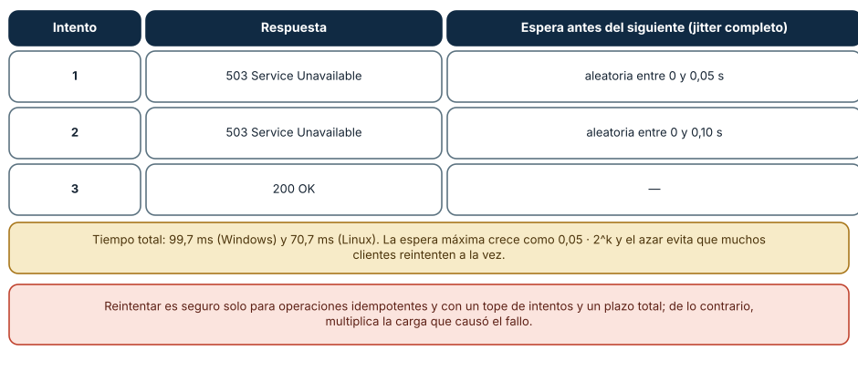
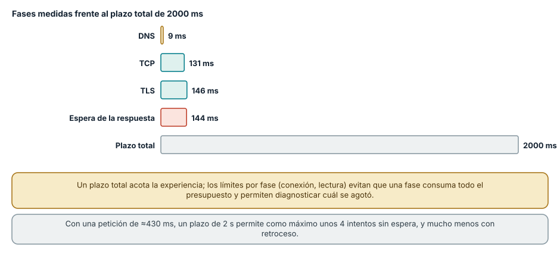
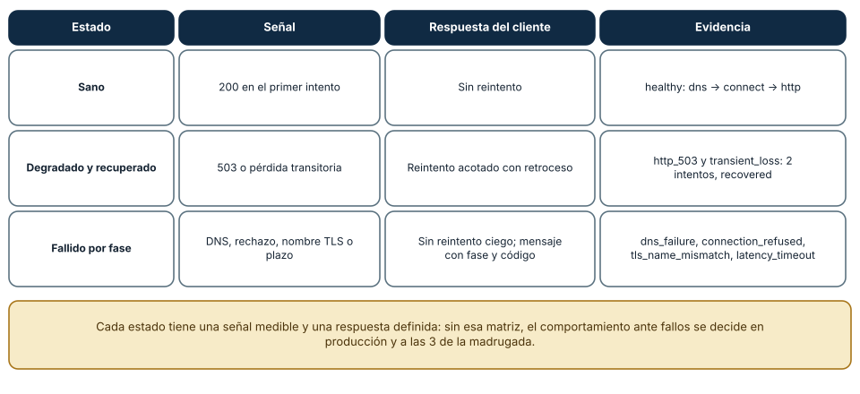

← SE-047 — Taller: seguir una petición de extremo a extremo · ↑ Parte 03 · 📚 Índice completo · 🌐 Portal · SE-049 — Descomposición, abstracción y reconocimiento de patrones →
Punto profesional y fundamento pedagógico
Punto profesional. La clase existe para construir un servicio observable que trate timeout, reintento e idempotencia como decisiones de producto.
Por qué aparece aquí. Se sitúa después de Taller: seguir una petición de extremo a extremo y antes de Descomposición, abstracción y reconocimiento de patrones: convierte el conocimiento anterior en una decisión observable que la clase siguiente podrá reutilizar. La continuidad se comprueba en el artefacto, no por compartir vocabulario.
Error conceptual que debe corregir. Reintentar cualquier fallo y duplicar efectos.
Secuencia de aprendizaje. Antes de leer la solución, el estudiante predice el resultado del caso normal y del error conceptual anterior. Luego explica un caso resuelto paso a paso, construye un contraejemplo que cambie la decisión y, sin consultar el texto, reconstruye el mecanismo y lo aplica a una entrada nueva. La secuencia usa predicción, explicación propia, contraste y recuperación. ICAP distingue participación de construcción de conocimiento; How People Learn II exige conectar conocimiento previo, contexto y transferencia; la práctica de recuperación respalda producir de nuevo la explicación tras una demora; y Education for Life and Work exige devolución que explique la causa del error.
Evidencia de aprendizaje. Servicio, cliente de prueba, fallos inyectados, trazas correlacionadas y matriz de reintentos. Debe contener predicción previa, observación, explicación causal, contraejemplo, criterio de aceptación y una nota de qué dato haría cambiar la conclusión.
Límite de la conclusión. El proyecto local no demuestra disponibilidad ni tolerancia regional.
Trazabilidad fuente → afirmación
| Fuente primaria u oficial | Afirmación que respalda | Lo que no prueba |
|---|---|---|
| RFC 9110 — HTTP Semantics | define la semántica normativa del protocolo nombrado en el título y sus límites interoperables | No demuestra por sí sola que el artefacto del estudiante sea correcto. |
| RFC 9111 — HTTP Caching | define la semántica normativa del protocolo nombrado en el título y sus límites interoperables | No demuestra por sí sola que el artefacto del estudiante sea correcto. |
| RFC 8446 — TLS 1.3 | define la semántica normativa del protocolo nombrado en el título y sus límites interoperables | No demuestra por sí sola que el artefacto del estudiante sea correcto. |
Antes de empezar
Esta clase continúa la petición observable de extremo a extremo de la Parte 3. No estudia redes como una lista de siglas: añade una decisión concreta al mismo recorrido y obliga a explicar dónde nace cada señal. Conserva una bitácora con cuatro columnas —hecho, interpretación, hipótesis rival y próxima prueba—; si una conclusión no apunta a evidencia, todavía no es diagnóstico.
Prerrequisitos
- Haber completado
SE-047o poder explicar su evidencia principal. - Trabajar solo contra
localhost, una red propia o un destino con autorización expresa. - Disponer de navegador,
curly herramientas equivalentes del sistema; registra versiones y plataforma.
Problema auténtico
El proyecto integra la petición observable de extremo a extremo como servicio local: recibe una URL autorizada, ejecuta comprobaciones acotadas y genera una traza comentada. Debe sobrevivir DNS lento, puerto cerrado, certificado inválido, 503, respuesta obsoleta y cliente lento sin filtrar secretos ni quedar bloqueado.
Objetivos observables
Al terminar podrás:
- definir SLI y presupuesto por fase;
- implementar timeouts, cancelación y reintentos seguros;
- exponer estados degradados y evidencia correlacionada;
- demostrar recuperación con una matriz de fallos;
- comunicar límites y una siguiente prueba sin presentar inferencias como hechos.
Mapa conceptual
Ver la notación fuente del diagrama
flowchart LR
I[Intento de comunicación] --> O[Observación localizada]
O --> H[Hipótesis y alternativa]
H --> P[Prueba discriminante]
P --> D[Decisión reversible]
D --> E[Evidencia para la siguiente clase]
P -->|no separa hipótesis| HEl ciclo evita el diagnóstico por intuición. La observación se ubica antes de interpretarse; la prueba debe producir resultados diferentes bajo hipótesis rivales; la decisión conserva una salida de recuperación. En esta clase la pregunta rectora es: ¿Cómo debe degradarse y recuperarse un servicio cuando la red incumple sus supuestos?
Temas y por qué importan
| Núcleo | Pregunta de trabajo | Evidencia esperada |
|---|---|---|
| alcance | ¿dónde es válido este identificador o estado? | mapa de fronteras |
| mecanismo | ¿qué entrada produce qué transición? | secuencia comentada |
| garantía | ¿qué promete el protocolo y qué no? | ejemplo y contraejemplo |
| diagnóstico | ¿qué prueba separa causas plausibles? | comparación reproducible |
| operación | ¿cómo falla, se limita y se recupera? | caso sano, degradado y restaurado |
Conceptos y decisiones
1. Contrato y frontera de seguridad
La petición observable de extremo a extremo acepta solo esquemas y destinos permitidos, rechaza direcciones locales o metadatos cuando opera como servicio compartido y limita redirecciones. La validación evita convertir la herramienta en SSRF. El informe redacta credenciales, query sensible y direcciones privadas.
2. Presupuesto y deadline
Cada fase recibe un límite subordinado a un deadline total. Si DNS consume el presupuesto, no se inicia una operación que ya no puede completar. Los timeouts son resultados tipados por fase; network error no es suficientemente accionable.
3. Reintento, backoff y circuito
Solo fallos temporales y operaciones seguras/idempotentes se reintentan. Backoff con jitter evita sincronizar clientes. Un circuito abierto limita presión sobre una dependencia y ofrece una respuesta degradada; debe tener prueba de recuperación y no quedarse abierto para siempre.
4. Observabilidad útil
Logs estructurados incluyen timestamp, request ID, fase, duración, outcome y causa categorizada; métricas agregan tasa, latencia y saturación; una traza conecta saltos. Ninguna señal debe copiar secretos ni usar cardinalidad ilimitada como URL completa.
5. Degradación y recuperación
Un servicio tolerante a fallos no promete éxito universal. Puede servir último resultado marcado con edad, omitir una dependencia opcional o devolver error claro. La recuperación se prueba restaurando la red y verificando que colas, circuitos y caches regresen a estado coherente.
Reintento con retroceso exponencial y jitter
Reintentar bien exige tres decisiones: cuántas veces, con qué espera y para qué operaciones. En una prueba local, un servidor respondió 503 con Retry-After las dos primeras veces y 200 la tercera. Un cliente con *retroceso exponencial con jitter completo* (espera aleatoria entre 0 y 0,05 · 2^k segundos antes del intento k+1) tuvo éxito en el tercer intento: estados [503, 503, 200], con un total de 99,7 ms en Windows y 70,7 ms en Linux. El azar del *jitter* es esencial: si muchos clientes fallan a la vez y esperan el mismo tiempo, reintentan a la vez y vuelven a saturar al servicio (*tormenta de reintentos*).
import random, time
def con_reintento(operacion, intentos=5, base=0.05, tope=2.0):
for k in range(intentos):
respuesta = operacion()
if respuesta.status != 503:
return respuesta
time.sleep(random.uniform(0, min(tope, base * 2 ** k)))
raise TimeoutError("agotados los intentos")
Cómo leer la figura. Cada fila es un intento con su respuesta y la espera máxima posible antes del siguiente. Dónde deja de valer: esto solo es seguro para operaciones idempotentes; reintentar un pago sin una clave de idempotencia puede cobrarlo dos veces (SE-040). Además, el reintento amplifica la carga: con tres capas que reintentan cada una tres veces, una petición puede convertirse en 27, de modo que el reintento se hace en *una* capa y con un presupuesto global.
Presupuesto de tiempo y plazos por fase
Un *plazo total* (deadline) acota la experiencia de la persona; los *límites por fase* (conexión, lectura) evitan que una fase consuma todo el presupuesto y permiten saber cuál se agotó. Con las fases medidas en SE-037 (DNS 9 ms, TCP 131 ms, TLS 146 ms y espera 144 ms, unos 430 ms en total), un plazo de 2000 ms deja unos 1570 ms de margen: caben unos cuatro intentos *sin espera* y menos con retroceso. El plazo debe *propagarse*: si el cliente concede 2 s, el servicio que llama a otro no puede darle más de lo que queda. Un plazo sin propagar produce el peor caso: el cliente se rinde y el servidor sigue trabajando en una petición que nadie espera.

Cómo leer la figura. Las cuatro barras son las fases de una petición sana; la última es el plazo total. Dónde deja de valer: las fases medidas son de un destino y una hora; en producción hay colas, picos y fases adicionales (autenticación, base de datos). El presupuesto se calibra con percentiles altos, no con la mediana.
La matriz sana, degradada y recuperada
El servicio se define por su comportamiento en tres estados. *Sano*: responde en el primer intento y no reintenta. *Degradado y recuperado*: ante una señal transitoria (un 503 o una pérdida) el cliente reintenta con límite y retroceso, y el resultado final es recovered con dos intentos (los escenarios http_503 y transient_loss del laboratorio). *Fallido por fase*: ante DNS, rechazo, nombre TLS inválido o plazo agotado, el cliente *no reintenta a ciegas*: informa la fase y el código (dns_failure, connection_refused, tls_name_mismatch, latency_timeout). Un *circuito* (circuit breaker) añade una cuarta opción: tras varias fallas consecutivas deja de intentar durante un tiempo y falla rápido, protegiendo al servicio degradado y a los recursos del cliente.

Cómo leer la figura. Cada fila es un estado con su señal observable, la respuesta del cliente y los escenarios que la demuestran. Dónde deja de valer: la matriz cubre un cliente y un servicio; en un sistema real hay degradación parcial (algunas funciones sí, otras no), y la respuesta correcta incluye comunicar el estado a las personas, no solo a otros programas. Un *runbook* convierte la matriz en pasos operativos con responsables, y se prueba con ejercicios de fallo.
Definiciones de trabajo
- SLI: medida cuantitativa de comportamiento del servicio.
- deadline: instante límite para completar una operación.
- backoff: espera creciente entre intentos.
- circuit breaker: control que limita llamadas a una dependencia degradada.
- SSRF: abuso que induce a un servidor a solicitar destinos no autorizados.
Estas definiciones son operativas: precisan el uso dentro de la petición observable de extremo a extremo y deben leerse junto a las fuentes. No convierten un término histórico o dependiente de implementación en una garantía universal.
Ejemplo mínimo
Define un resultado JSON con phase, outcome, duration_ms, attempts y evidence. Representa éxito, timeout DNS y error TLS sin usar texto libre como única señal.
El ejemplo se acepta cuando incluye predicción previa, salida relevante y explicación de qué hipótesis descarta. Copiar una salida sin interpretación no demuestra comprensión.
Ejemplo profesional
El proyecto entrega un servidor local y CLI de consulta. Un entorno simulado ofrece DNS demorado, puerto cerrado, TLS autofirmado, 503 transitorio y caché. El tablero muestra tasa de éxito y p95 por fase; el runbook explica detección, mitigación, recuperación y límite de cada automatismo.
La diferencia profesional es la trazabilidad: la decisión conecta requisito, mecanismo, señal, riesgo y recuperación. El equipo puede cambiar de herramienta sin perder el razonamiento.
Práctica guiada
- especifica amenazas, destinos permitidos y presupuesto.
- implementa fases con resultados tipados.
- agrega request ID y redacción.
- crea cinco fallos deterministas en laboratorio.
- ejecuta matriz sana/degradada/recuperada.
- entrega a otra persona para operación con el runbook.
- entrega
trace.mdcon comandos redactados, marcas de tiempo y condiciones de repetición.
Ejercicios
- Cálculo: con base 50 ms y tope 2 s, escribe el máximo de espera antes de los intentos 2 a 6 y el peor tiempo total con un plazo de 3 s.
- Idempotencia: diseña la clave de deduplicación para «crear un pedido» y explica qué responde el servidor al repetirla.
- Presupuesto: reparte un plazo de 2 s entre cliente, balanceador y servicio, y define qué propaga cada uno.
- Runbook: redacta los pasos de operación para el escenario
latency_timeout, con la señal, el responsable y la acción de recuperación.
Reto verificable
Entrega una traza comentada que permita a otra persona responder: qué se intentó, qué frontera se observó, qué garantía aplicaba, qué falló, qué alternativa fue descartada y cómo se restauró el estado. La persona revisora debe poder repetir al menos una prueba sin instrucciones orales.
Demostración guiada
- Predice el primer evento observable y el resultado sano.
- Ejecuta una sola petición de la petición observable de extremo a extremo y asigna cada marca a una frontera.
- Introduce el fallo controlado descrito abajo.
- Compara por primera divergencia, no por cantidad de errores posteriores.
- Restaura, repite y conserva evidencia de recuperación.
Una demostración que no incluye restauración solo prueba cómo romper el laboratorio.
Preguntas frecuentes
¿Cuántos reintentos son razonables?
Los suficientes para absorber fallos transitorios sin multiplicar la carga: típicamente dos o tres, con retroceso y *jitter*, un plazo total y un límite global compartido por las capas. Más reintentos aumentan la probabilidad de éxito individual y empeoran la saturación colectiva.
¿Cuándo no se debe reintentar?
Cuando el error es permanente (nombre inexistente, certificado inválido, 4xx por una petición mal formada), cuando la operación no es idempotente y no hay clave de deduplicación, o cuando el plazo restante no alcanza. Reintentar un error permanente solo retrasa el diagnóstico.
¿Qué hace un circuit breaker que no haga un reintento?
Un reintento insiste en una petición; el circuito deja de enviar *todas* las peticiones a un destino que está fallando, durante un tiempo, y prueba de vez en cuando si se recuperó. Protege al destino y evita que el cliente acumule esperas.
¿Cómo sé que mi degradación funciona antes de que ocurra un incidente?
Con ejercicios de fallo controlados (por ejemplo, la matriz del laboratorio en un entorno de prueba): se provoca cada fallo, se comprueba que la señal aparece y que el cliente responde según la política, y se corrige lo que no.
Fallo controlado y diagnóstico
Encadena DNS lento y 503 para comprobar que el deadline total impide una tormenta de reintentos. Luego restaura ambos componentes y verifica cierre del circuito, vaciado controlado y ausencia de tareas huérfanas.
Registra estado previo, acción, síntoma, primera divergencia, causa, corrección y estado posterior. Si la acción afecta red compartida, requiere privilegios amplios o no tiene rollback probado, reemplázala por una simulación local.
Una práctica provoca una tormenta de reintentos y la corrige. Con un servidor local que falla las primeras N peticiones y varios clientes simultáneos, compara dos políticas: reintento inmediato y reintento con retroceso exponencial y jitter. Síntoma: con reintento inmediato, las peticiones fallidas se acumulan en ráfagas y el servidor tarda más en recuperarse. Hipótesis: el sincronismo de los reintentos mantiene la carga. Prueba: mide el número total de peticiones recibidas y el tiempo hasta que todos los clientes tienen éxito con cada política. Corrección: retroceso con jitter, tope de intentos, plazo total y reintento solo de operaciones idempotentes. Limita el número de clientes y de peticiones para no presionar el equipo.
Errores comunes y cómo corregirlos
| Síntoma | Causa | Corrección |
|---|---|---|
| El servicio se satura más al fallar | Reintentos inmediatos y sincronizados de muchos clientes | Retroceso exponencial con jitter y tope de intentos |
| Peticiones duplicadas tras un timeout | Se reintentan operaciones no idempotentes | Claves de idempotencia o consulta previa del estado |
| Reintentos multiplicados entre capas | Cada capa reintenta por su cuenta | Reintentar en una capa y fijar un presupuesto global |
| El servidor sigue trabajando tras la renuncia del cliente | El plazo no se propaga | Propagar el plazo restante y cancelar el trabajo |
| Fallos permanentes que se reintentan | No se distingue error transitorio de permanente | Clasificar por código y fase; no reintentar errores permanentes |
Entorno y archivos clave
work/SE-048/
├── README.md # alcance, autorización y reproducción
├── request.txt # petición sin credenciales
├── trace.md # línea temporal y evidencias
├── failure-report.md # hipótesis, prueba y recuperación
└── diagram.mmd # mapa accesible acompañado de textoLos archivos son contenedores, no evidencia automática. README.md declara sistema operativo, versiones, red utilizada y limpieza. Nunca confirmes cambios de red destructivos sin una ruta de recuperación.
Laboratorio integrado de la Parte 03
El proyecto base es la petición observable y fallos por fase. Debes mantener sus límites de loopback, pruebas y resultados tipados, y ampliarlo con presupuesto total, cancelación, una clave idempotente para una escritura simulada y un runbook. La entrega incluye casos sano, degradado y recuperado; un resultado verde aislado no acredita tolerancia a fallos.
Seguridad, ética y accesibilidad
- captura únicamente tráfico propio o autorizado y durante la ventana mínima;
- redacta cookies, tokens, query strings, IP privadas y nombres de personas;
- no desactives TLS, firewall o aislamiento como solución permanente;
- acompaña color y diagramas con orden, etiquetas y una explicación textual;
- ofrece comandos equivalentes o resultados esperados para quien no pueda modificar una red;
- considera que telemetría e IP pueden identificar o perfilar personas.
Puente hacia el trabajo con agentes
Los agentes reintentan: llamadas a modelos con límites de tasa, herramientas con errores transitorios, ciclos de «intenta otra vez» que pueden no terminar. El diseño de esta clase es el contrato del harness: reintento con retroceso y *jitter*, un presupuesto global de intentos, tiempo y *costo* por tarea (porque cada reintento de un modelo cuesta dinero), claves de idempotencia para las herramientas con efecto, circuitos para los servicios degradados y una matriz explícita de qué hacer ante cada fallo. Un agente sin esos límites puede entrar en un bucle que consume presupuesto o duplica acciones, y la regla se verifica con pruebas de regresión que provocan cada fallo. Las partes de harness, bucles de agentes y evaluación desarrollan esos controles.
Transferencia
Traslada el mecanismo a una segunda red o protocolo sin repetir comandos mecánicamente. Conserva la pregunta y el criterio de evidencia; cambia los supuestos de dirección, intermediación y política. Escribe qué observación seguiría siendo válida y cuál depende de la topología original.
Evaluación y evidencia
| Criterio | Evidencia mínima | Señal de dominio |
|---|---|---|
| modelo causal | mapa con fronteras y unidades correctas | explica interacción y fugas del modelo |
| protocolo | garantía y límite apoyados en fuente | distingue semántica de implementación |
| diagnóstico | hipótesis rival y prueba discriminante | encuentra primera divergencia |
| reproducibilidad | contexto, comandos y salida redactada | otra persona repite el resultado |
| responsabilidad | autorización, minimización y rollback | reduce riesgo sin borrar evidencia |
La clase no se aprueba por ejecutar comandos. Se aprueba cuando la evidencia sostiene las conclusiones y declara lo que todavía no puede saberse.
Fuentes
- RFC 9110 — HTTP Semantics — define la semántica normativa del protocolo nombrado en el título y sus límites interoperables.
- RFC 9111 — HTTP Caching — define la semántica normativa del protocolo nombrado en el título y sus límites interoperables.
- RFC 8446 — TLS 1.3 — define la semántica normativa del protocolo nombrado en el título y sus límites interoperables.
- RFC 9000 — QUIC — define la semántica normativa del protocolo nombrado en el título y sus límites interoperables.
- RFC 1034 — Domain Names: Concepts and Facilities — define la semántica normativa del protocolo nombrado en el título y sus límites interoperables.
Las RFC describen contratos de protocolo, no certifican una red, proveedor o herramienta. Cada afirmación de comportamiento local debe contrastarse con evidencia de ese entorno.
- AWS Builders' Library: Timeouts, retries and backoff with jitter y Google SRE Book: Handling Overload: práctica de retroceso con jitter, presupuestos de reintento y degradación; respaldan las figuras 1 y 2.
- RFC 9110 §10.2.3, Retry-After y Circuit Breaker (Fowler): pista de reintento del servidor y patrón de circuito.
- Laboratorio de la Parte 03: escenarios
http_503ytransient_lossy la matriz sana, degradada y recuperada.
Límites y siguiente paso
El proyecto demuestra diseño y diagnóstico en laboratorio; no certifica disponibilidad productiva ni sustituye monitoreo externo. Sus resultados alimentan la Parte 4, donde el mismo incidente se formaliza como problema, invariantes y algoritmo.
Glosario
- SLI: medida cuantitativa de comportamiento del servicio.
- deadline: instante límite para completar una operación.
- backoff: espera creciente entre intentos.
- circuit breaker: control que limita llamadas a una dependencia degradada.
- SSRF: abuso que induce a un servidor a solicitar destinos no autorizados.
← SE-047 — Taller: seguir una petición de extremo a extremo · ↑ Parte 03 · 📚 Índice completo · 🌐 Portal · SE-049 — Descomposición, abstracción y reconocimiento de patrones →